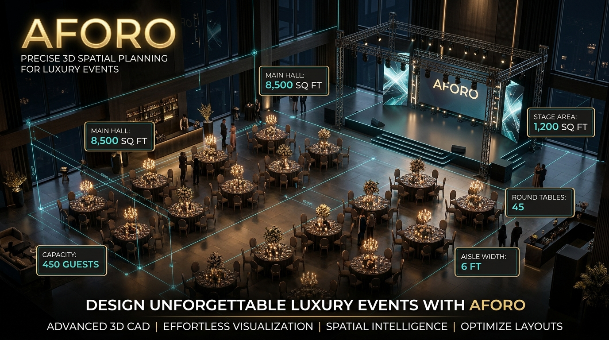

Editor 2D/3D profesional en el navegador para diseño técnico y montaje de eventos en recintos de gran escala. Construido sobre Pascal Editor Core, resuelve la concurrencia espacial con precisión milimétrica.
Reto: Mantener fluidez gráfica con miles de elementos sin agotar batería en portátiles.
Solución: Pipeline de renderizado bajo demanda (0 FPS en reposo) y GPU Instancing a 145.5 FPS constantes.
Ingeniería: Catálogo paramétrico de 902 piezas, 68 tests y 2.944 aserciones verificadas.
🚧 Alpha Activa
Three.js
WebGPU
145.5 FPS
0 FPS Idle
Next.js 15
Turborepo
Bun